Realistic NiaH V2：Bias 与 N、L 的经验 Law
1. Bias 与分析目标
对成功解析出整数的请求 \(i\)，定义 signed bias 与 absolute deviation：
\(b_i<0\) 表示漏计，\(b_i>0\) 表示过计。主拟合目标是在固定模型、mode、\(N\)、\(L\) 后对十个 seeds 求条件均值：
其中 \(m_{N,L}\le 10\)。Parse failure 没有数值 \(\widehat N\)，因此 bias 在数学上未定义；报告既不把它设为 0，也不删除其存在，而是在第一份报告中单列 parse coverage。Absolute-deviation law \(\overline{|b|}_{N,L}\) 是次级诊断，用于识别正负误差相互抵消的情形。
2. 有边界的候选 Law 搜索
为保持横纵轴和解释简单，候选变量只来自 \(N\)、\(L_k=L/1000\)、\(\log_2N\)、\(\log_2L_k\)、\(N/L_k\)、\(L_k/N\)、\(NL_k\)，以及低阶加法、一个交互项、一个预先固定断点（\(N=10\) 或 \(L_k=5\)）和至多二次项。没有逐点多项式、模型 ID 特征或事后删点。
每个模型 × mode 单独搜索。每次留出一个 seed，使用其余九个 seeds 拟合并预测留出 seed；候选必须落在最低 seed-CV MSE 的 one-standard-error 集合内，再最大化“cell cross-fitted R² − 每个额外参数 0.015”的简洁性分数。报告同时给出 request-level OOF R²、leave-one-N-level-out 与 leave-one-L-level-out R²。F-test/FDR 仅作为探索性描述，因为公式经过选择，不能替代预注册确认实验。
3. 29 个 Signed-bias Law
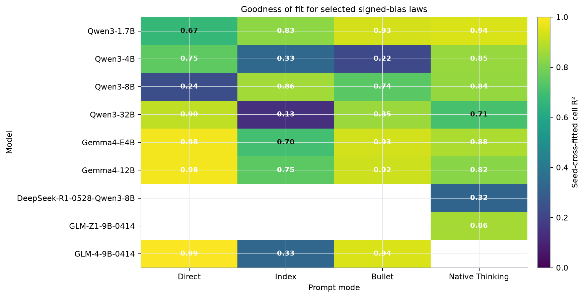
| Model | Mode | Selected form | CV cell R² | Request OOF R² | Leave-N-out R² | Leave-L-out R² | FDR q | Fit class |
|---|---|---|---|---|---|---|---|---|
| Qwen3-1.7B | Direct | quadratic N + quadratic L | 0.666 | 0.069 | 0.582 | -2.138 | 3.83e-10 | Moderate |
| Qwen3-1.7B | Index | N + log₂L + Nlog₂L | 0.831 | 0.343 | 0.764 | 0.787 | 1.85e-17 | Strong |
| Qwen3-1.7B | Bullet | quadratic N + L | 0.934 | 0.600 | 0.885 | 0.882 | 9.45e-27 | Strong |
| Qwen3-1.7B | Native Thinking | N + L + NL | 0.943 | 0.626 | 0.917 | 0.905 | 6.66e-28 | Strong |
| Qwen3-4B | Direct | N | 0.752 | 0.293 | 0.684 | 0.585 | 7.21e-16 | Moderate |
| Qwen3-4B | Index | quadratic N + L | 0.334 | -0.037 | 0.178 | 0.047 | 3.53e-04 | Weak |
| Qwen3-4B | Bullet | N + quadratic L | 0.220 | -0.001 | 0.065 | -0.166 | 7.81e-03 | Weak |
| Qwen3-4B | Native Thinking | N + L + NL | 0.845 | 0.127 | 0.767 | 0.521 | 2.88e-18 | Strong |
| Qwen3-8B | Direct | N + quadratic L | 0.240 | -0.020 | 0 | -5.598 | 4.64e-03 | Weak |
| Qwen3-8B | Index | N + L + NL | 0.862 | 0.155 | 0.764 | 0.537 | 1.99e-19 | Strong |
| Qwen3-8B | Bullet | N + L + NL | 0.743 | 0.443 | -0.023 | 0.693 | 1.93e-13 | Moderate |
| Qwen3-8B | Native Thinking | N + L + NL | 0.841 | 0.132 | 0.797 | 0.341 | 4.23e-18 | Strong |
| Qwen3-32B | Direct | N | 0.903 | 0.656 | 0.893 | 0.868 | 1.89e-25 | Strong |
| Qwen3-32B | Index | N + L + NL | 0.134 | -0.011 | -0.110 | -0.013 | 8.30e-02 | Weak |
| Qwen3-32B | Bullet | N + log₂L + Nlog₂L | 0.850 | 0.321 | 0.571 | 0.829 | 1.26e-18 | Strong |
| Qwen3-32B | Native Thinking | N + L + NL | 0.708 | 0.046 | 0.645 | -0.012 | 3.30e-12 | Moderate |
| Gemma4-E4B | Direct | N + log₂L + Nlog₂L | 0.982 | 0.894 | 0.978 | 0.969 | 4.09e-39 | Strong |
| Gemma4-E4B | Index | N + L + NL | 0.702 | 0.124 | 0.516 | 0.115 | 4.98e-12 | Moderate |
| Gemma4-E4B | Bullet | N + L + NL | 0.932 | 0.538 | 0.899 | 0.813 | 3.37e-26 | Strong |
| Gemma4-E4B | Native Thinking | N + L + NL | 0.875 | 0.385 | 0.839 | 0.197 | 2.28e-20 | Strong |
| Gemma4-12B | Direct | N + log₂L + Nlog₂L | 0.981 | 0.939 | 0.962 | 0.978 | 2.45e-38 | Strong |
| Gemma4-12B | Index | N + L + NL | 0.749 | 0.146 | 0.522 | -0.246 | 1.10e-13 | Moderate |
| Gemma4-12B | Bullet | N + L + NL | 0.924 | 0.639 | 0.858 | 0.886 | 3.13e-25 | Strong |
| Gemma4-12B | Native Thinking | N + L + NL | 0.821 | 0.481 | 0.734 | -0.139 | 3.72e-17 | Strong |
| DeepSeek-R1-0528-Qwen3-8B | Native Thinking | N + L + NL | 0.321 | 0.017 | -0.119 | 0.157 | 4.60e-04 | Weak |
| GLM-Z1-9B-0414 | Native Thinking | NL | 0.864 | 0.412 | 0.852 | 0.829 | 5.17e-22 | Strong |
| GLM-4-9B-0414 | Direct | segmented N at 10 + log₂L | 0.993 | 0.981 | 0.990 | 0.984 | 4.02e-48 | Strong |
| GLM-4-9B-0414 | Index | quadratic N + quadratic L | 0.329 | 0.080 | 0.142 | -0.277 | 1.01e-03 | Weak |
| GLM-4-9B-0414 | Bullet | N + log₂L + Nlog₂L | 0.943 | 0.780 | 0.841 | 0.922 | 4.10e-28 | Strong |
展开全部 29 条数值公式与 bootstrap 区间
Qwen3-1.7B · Direct · CV cell R²=0.666
候选形式：\(b=\alpha+\beta_1N+\beta_2N^2+\beta_3L_k+\beta_4L_k^2\)。\(L_k=L/1000\)。Seed-cross-fitted cell R²=0.666；request OOF R²=0.069；leave-N-out R²=0.582；leave-L-out R²=-2.138；探索性 FDR q=3.83e-10。
| Term | Estimate | Bootstrap 2.5% | Bootstrap 97.5% |
|---|---|---|---|
| intercept | -2.4615 | -6.6333 | 1.6251 |
| N | 0.2504 | -0.1656 | 0.7208 |
| N2 | -0.0188 | -0.0319 | -0.0066 |
| Lk | 1.1905 | 0.3344 | 1.9577 |
| Lk2 | -0.0369 | -0.0663 | -0.0052 |
Qwen3-1.7B · Index · CV cell R²=0.831
候选形式：\(b=\alpha+\beta_NN+\beta_L\log_2L_k+\beta_{NL}N\log_2L_k\)。\(L_k=L/1000\)。Seed-cross-fitted cell R²=0.831；request OOF R²=0.343；leave-N-out R²=0.764；leave-L-out R²=0.787；探索性 FDR q=1.85e-17。
| Term | Estimate | Bootstrap 2.5% | Bootstrap 97.5% |
|---|---|---|---|
| intercept | -24.5658 | -34.7757 | -13.3386 |
| N | 0.9257 | 0.4868 | 1.4022 |
| log2Lk | 20.7729 | 17.2309 | 24.4866 |
| Nlog2Lk | -0.8019 | -1.0322 | -0.5748 |
Qwen3-1.7B · Bullet · CV cell R²=0.934
候选形式：\(b=\alpha+\beta_1N+\beta_2N^2+\beta_LL_k\)。\(L_k=L/1000\)。Seed-cross-fitted cell R²=0.934；request OOF R²=0.600；leave-N-out R²=0.885；leave-L-out R²=0.882；探索性 FDR q=9.45e-27。
| Term | Estimate | Bootstrap 2.5% | Bootstrap 97.5% |
|---|---|---|---|
| intercept | 1.8855 | 0.8953 | 2.9663 |
| N | -0.5000 | -0.6889 | -0.3173 |
| N2 | 0.0372 | 0.0275 | 0.0459 |
| Lk | -0.0486 | -0.1345 | 0.0431 |
Qwen3-1.7B · Native Thinking · CV cell R²=0.943
候选形式：\(b=\alpha+\beta_NN+\beta_LL_k+\beta_{NL}NL_k\)。\(L_k=L/1000\)。Seed-cross-fitted cell R²=0.943；request OOF R²=0.626；leave-N-out R²=0.917；leave-L-out R²=0.905；探索性 FDR q=6.66e-28。
| Term | Estimate | Bootstrap 2.5% | Bootstrap 97.5% |
|---|---|---|---|
| intercept | 0.1815 | 0.0638 | 0.3130 |
| N | -0.0951 | -0.1390 | -0.0524 |
| Lk | 0.1173 | 0.0824 | 0.1603 |
| NLk | -0.0198 | -0.0258 | -0.0139 |
Qwen3-4B · Direct · CV cell R²=0.752
候选形式：\(b=\alpha+\beta_NN\)。\(L_k=L/1000\)。Seed-cross-fitted cell R²=0.752；request OOF R²=0.293；leave-N-out R²=0.684；leave-L-out R²=0.585；探索性 FDR q=7.21e-16。
| Term | Estimate | Bootstrap 2.5% | Bootstrap 97.5% |
|---|---|---|---|
| intercept | 0.6585 | 0.4188 | 0.9783 |
| N | -0.2187 | -0.2999 | -0.1402 |
Qwen3-4B · Index · CV cell R²=0.334
候选形式：\(b=\alpha+\beta_1N+\beta_2N^2+\beta_LL_k\)。\(L_k=L/1000\)。Seed-cross-fitted cell R²=0.334；request OOF R²=-0.037；leave-N-out R²=0.178；leave-L-out R²=0.047；探索性 FDR q=3.53e-04。
| Term | Estimate | Bootstrap 2.5% | Bootstrap 97.5% |
|---|---|---|---|
| intercept | 0.6119 | -0.1694 | 1.7983 |
| N | -0.1783 | -0.4200 | -0.0027 |
| N2 | 0.0064 | -0.0005 | 0.0152 |
| Lk | 0.0285 | -0.0231 | 0.1070 |
Qwen3-4B · Bullet · CV cell R²=0.220
候选形式：\(b=\alpha+\beta_NN+\beta_1L_k+\beta_2L_k^2\)。\(L_k=L/1000\)。Seed-cross-fitted cell R²=0.220；request OOF R²=-0.001；leave-N-out R²=0.065；leave-L-out R²=-0.166；探索性 FDR q=7.81e-03。
| Term | Estimate | Bootstrap 2.5% | Bootstrap 97.5% |
|---|---|---|---|
| intercept | -0.1728 | -0.3678 | -0.0066 |
| N | -0.0189 | -0.0438 | 0.0076 |
| Lk | 0.1296 | 0.0643 | 0.2147 |
| Lk2 | -0.0066 | -0.0109 | -0.0032 |
Qwen3-4B · Native Thinking · CV cell R²=0.845
候选形式：\(b=\alpha+\beta_NN+\beta_LL_k+\beta_{NL}NL_k\)。\(L_k=L/1000\)。Seed-cross-fitted cell R²=0.845；request OOF R²=0.127；leave-N-out R²=0.767；leave-L-out R²=0.521；探索性 FDR q=2.88e-18。
| Term | Estimate | Bootstrap 2.5% | Bootstrap 97.5% |
|---|---|---|---|
| intercept | -0.0977 | -0.2669 | 0.0679 |
| N | 0.0221 | -0.0095 | 0.0538 |
| Lk | 0.0252 | 0.0101 | 0.0414 |
| NLk | -0.0058 | -0.0088 | -0.0030 |
Qwen3-8B · Direct · CV cell R²=0.240
候选形式：\(b=\alpha+\beta_NN+\beta_1L_k+\beta_2L_k^2\)。\(L_k=L/1000\)。Seed-cross-fitted cell R²=0.240；request OOF R²=-0.020；leave-N-out R²=0.000；leave-L-out R²=-5.598；探索性 FDR q=4.64e-03。
| Term | Estimate | Bootstrap 2.5% | Bootstrap 97.5% |
|---|---|---|---|
| intercept | -0.2266 | -0.8793 | 0.3938 |
| N | -0.0309 | -0.0931 | 0.0265 |
| Lk | 0.1571 | 0.0135 | 0.3067 |
| Lk2 | -0.0101 | -0.0177 | -0.0031 |
Qwen3-8B · Index · CV cell R²=0.862
候选形式：\(b=\alpha+\beta_NN+\beta_LL_k+\beta_{NL}NL_k\)。\(L_k=L/1000\)。Seed-cross-fitted cell R²=0.862；request OOF R²=0.155；leave-N-out R²=0.764；leave-L-out R²=0.537；探索性 FDR q=1.99e-19。
| Term | Estimate | Bootstrap 2.5% | Bootstrap 97.5% |
|---|---|---|---|
| intercept | -0.0414 | -0.1028 | 0.0120 |
| N | 0.0148 | 0.0050 | 0.0267 |
| Lk | 0.0132 | 0.0041 | 0.0258 |
| NLk | -0.0033 | -0.0058 | -0.0013 |
Qwen3-8B · Bullet · CV cell R²=0.743
候选形式：\(b=\alpha+\beta_NN+\beta_LL_k+\beta_{NL}NL_k\)。\(L_k=L/1000\)。Seed-cross-fitted cell R²=0.743；request OOF R²=0.443；leave-N-out R²=-0.023；leave-L-out R²=0.693；探索性 FDR q=1.93e-13。
| Term | Estimate | Bootstrap 2.5% | Bootstrap 97.5% |
|---|---|---|---|
| intercept | 0.0177 | -0.1069 | 0.1617 |
| N | 0.0092 | -0.0216 | 0.0414 |
| Lk | 0.0426 | 0.0305 | 0.0561 |
| NLk | -0.0096 | -0.0129 | -0.0068 |
Qwen3-8B · Native Thinking · CV cell R²=0.841
候选形式：\(b=\alpha+\beta_NN+\beta_LL_k+\beta_{NL}NL_k\)。\(L_k=L/1000\)。Seed-cross-fitted cell R²=0.841；request OOF R²=0.132；leave-N-out R²=0.797；leave-L-out R²=0.341；探索性 FDR q=4.23e-18。
| Term | Estimate | Bootstrap 2.5% | Bootstrap 97.5% |
|---|---|---|---|
| intercept | -0.0574 | -0.1141 | -0.0134 |
| N | 0.0135 | 0.0039 | 0.0264 |
| Lk | 0.0151 | 0.0046 | 0.0281 |
| NLk | -0.0034 | -0.0062 | -0.0013 |
Qwen3-32B · Direct · CV cell R²=0.903
候选形式：\(b=\alpha+\beta_NN\)。\(L_k=L/1000\)。Seed-cross-fitted cell R²=0.903；request OOF R²=0.656；leave-N-out R²=0.893；leave-L-out R²=0.868；探索性 FDR q=1.89e-25。
| Term | Estimate | Bootstrap 2.5% | Bootstrap 97.5% |
|---|---|---|---|
| intercept | -0.9194 | -1.1100 | -0.7478 |
| N | 0.2759 | 0.2341 | 0.3207 |
Qwen3-32B · Index · CV cell R²=0.134
候选形式：\(b=\alpha+\beta_NN+\beta_LL_k+\beta_{NL}NL_k\)。\(L_k=L/1000\)。Seed-cross-fitted cell R²=0.134；request OOF R²=-0.011；leave-N-out R²=-0.110；leave-L-out R²=-0.013；探索性 FDR q=8.30e-02。
| Term | Estimate | Bootstrap 2.5% | Bootstrap 97.5% |
|---|---|---|---|
| intercept | -0.1232 | -0.3566 | 0.0025 |
| N | 0.0070 | 0 | 0.0178 |
| Lk | 0.0282 | 0.0014 | 0.0793 |
| NLk | -0.0018 | -0.0042 | 0 |
Qwen3-32B · Bullet · CV cell R²=0.850
候选形式：\(b=\alpha+\beta_NN+\beta_L\log_2L_k+\beta_{NL}N\log_2L_k\)。\(L_k=L/1000\)。Seed-cross-fitted cell R²=0.850；request OOF R²=0.321；leave-N-out R²=0.571；leave-L-out R²=0.829；探索性 FDR q=1.26e-18。
| Term | Estimate | Bootstrap 2.5% | Bootstrap 97.5% |
|---|---|---|---|
| intercept | 0.0951 | -0.0165 | 0.2077 |
| N | -0.0160 | -0.0395 | 0.0065 |
| log2Lk | -0.1246 | -0.1817 | -0.0652 |
| Nlog2Lk | 0.0254 | 0.0145 | 0.0359 |
Qwen3-32B · Native Thinking · CV cell R²=0.708
候选形式：\(b=\alpha+\beta_NN+\beta_LL_k+\beta_{NL}NL_k\)。\(L_k=L/1000\)。Seed-cross-fitted cell R²=0.708；request OOF R²=0.046；leave-N-out R²=0.645；leave-L-out R²=-0.012；探索性 FDR q=3.30e-12。
| Term | Estimate | Bootstrap 2.5% | Bootstrap 97.5% |
|---|---|---|---|
| intercept | -0.0391 | -0.0646 | -0.0116 |
| N | 0.0038 | 0.0008 | 0.0072 |
| Lk | 0.0092 | 0.0029 | 0.0148 |
| NLk | -0.0009 | -0.0017 | 0 |
Gemma4-E4B · Direct · CV cell R²=0.982
候选形式：\(b=\alpha+\beta_NN+\beta_L\log_2L_k+\beta_{NL}N\log_2L_k\)。\(L_k=L/1000\)。Seed-cross-fitted cell R²=0.982；request OOF R²=0.894；leave-N-out R²=0.978；leave-L-out R²=0.969；探索性 FDR q=4.09e-39。
| Term | Estimate | Bootstrap 2.5% | Bootstrap 97.5% |
|---|---|---|---|
| intercept | -0.6336 | -1.2246 | -0.0345 |
| N | 0.0505 | -0.0435 | 0.1380 |
| log2Lk | 0.5838 | 0.4178 | 0.7468 |
| Nlog2Lk | -0.1436 | -0.1690 | -0.1163 |
Gemma4-E4B · Index · CV cell R²=0.702
候选形式：\(b=\alpha+\beta_NN+\beta_LL_k+\beta_{NL}NL_k\)。\(L_k=L/1000\)。Seed-cross-fitted cell R²=0.702；request OOF R²=0.124；leave-N-out R²=0.516；leave-L-out R²=0.115；探索性 FDR q=4.98e-12。
| Term | Estimate | Bootstrap 2.5% | Bootstrap 97.5% |
|---|---|---|---|
| intercept | -0.2343 | -0.6049 | 0.0078 |
| N | 0.0385 | 0.0189 | 0.0625 |
| Lk | 0.0478 | -0.0047 | 0.1257 |
| NLk | -0.0090 | -0.0143 | -0.0047 |
Gemma4-E4B · Bullet · CV cell R²=0.932
候选形式：\(b=\alpha+\beta_NN+\beta_LL_k+\beta_{NL}NL_k\)。\(L_k=L/1000\)。Seed-cross-fitted cell R²=0.932；request OOF R²=0.538；leave-N-out R²=0.899；leave-L-out R²=0.813；探索性 FDR q=3.37e-26。
| Term | Estimate | Bootstrap 2.5% | Bootstrap 97.5% |
|---|---|---|---|
| intercept | -0.2035 | -0.3359 | -0.1156 |
| N | 0.0565 | 0.0381 | 0.0771 |
| Lk | 0.0283 | 0.0156 | 0.0456 |
| NLk | -0.0125 | -0.0151 | -0.0099 |
Gemma4-E4B · Native Thinking · CV cell R²=0.875
候选形式：\(b=\alpha+\beta_NN+\beta_LL_k+\beta_{NL}NL_k\)。\(L_k=L/1000\)。Seed-cross-fitted cell R²=0.875；request OOF R²=0.385；leave-N-out R²=0.839；leave-L-out R²=0.197；探索性 FDR q=2.28e-20。
| Term | Estimate | Bootstrap 2.5% | Bootstrap 97.5% |
|---|---|---|---|
| intercept | -0.1680 | -0.3049 | -0.0677 |
| N | 0.0541 | 0.0314 | 0.0802 |
| Lk | 0.0257 | 0.0054 | 0.0507 |
| NLk | -0.0127 | -0.0186 | -0.0077 |
Gemma4-12B · Direct · CV cell R²=0.981
候选形式：\(b=\alpha+\beta_NN+\beta_L\log_2L_k+\beta_{NL}N\log_2L_k\)。\(L_k=L/1000\)。Seed-cross-fitted cell R²=0.981；request OOF R²=0.939；leave-N-out R²=0.962；leave-L-out R²=0.978；探索性 FDR q=2.45e-38。
| Term | Estimate | Bootstrap 2.5% | Bootstrap 97.5% |
|---|---|---|---|
| intercept | 0.5692 | 0.4055 | 0.6926 |
| N | -0.1228 | -0.1566 | -0.0897 |
| log2Lk | 0.2208 | 0.1807 | 0.2582 |
| Nlog2Lk | -0.0865 | -0.0947 | -0.0769 |
Gemma4-12B · Index · CV cell R²=0.749
候选形式：\(b=\alpha+\beta_NN+\beta_LL_k+\beta_{NL}NL_k\)。\(L_k=L/1000\)。Seed-cross-fitted cell R²=0.749；request OOF R²=0.146；leave-N-out R²=0.522；leave-L-out R²=-0.246；探索性 FDR q=1.10e-13。
| Term | Estimate | Bootstrap 2.5% | Bootstrap 97.5% |
|---|---|---|---|
| intercept | -0.0180 | -0.0614 | 0.0220 |
| N | 0.0115 | 0.0040 | 0.0209 |
| Lk | 0.0029 | -0.0057 | 0.0125 |
| NLk | -0.0026 | -0.0048 | -0.0009 |
Gemma4-12B · Bullet · CV cell R²=0.924
候选形式：\(b=\alpha+\beta_NN+\beta_LL_k+\beta_{NL}NL_k\)。\(L_k=L/1000\)。Seed-cross-fitted cell R²=0.924；request OOF R²=0.639；leave-N-out R²=0.858；leave-L-out R²=0.886；探索性 FDR q=3.13e-25。
| Term | Estimate | Bootstrap 2.5% | Bootstrap 97.5% |
|---|---|---|---|
| intercept | 0.1939 | 0.1473 | 0.2379 |
| N | -0.0400 | -0.0505 | -0.0280 |
| Lk | 0.0044 | -0.0006 | 0.0095 |
| NLk | -0.0033 | -0.0052 | -0.0016 |
Gemma4-12B · Native Thinking · CV cell R²=0.821
候选形式：\(b=\alpha+\beta_NN+\beta_LL_k+\beta_{NL}NL_k\)。\(L_k=L/1000\)。Seed-cross-fitted cell R²=0.821；request OOF R²=0.481；leave-N-out R²=0.734；leave-L-out R²=-0.139；探索性 FDR q=3.72e-17。
| Term | Estimate | Bootstrap 2.5% | Bootstrap 97.5% |
|---|---|---|---|
| intercept | -0.1074 | -0.1713 | -0.0520 |
| N | 0.0332 | 0.0214 | 0.0450 |
| Lk | 0.0226 | 0.0104 | 0.0364 |
| NLk | -0.0076 | -0.0104 | -0.0049 |
DeepSeek-R1-0528-Qwen3-8B · Native Thinking · CV cell R²=0.321
候选形式：\(b=\alpha+\beta_NN+\beta_LL_k+\beta_{NL}NL_k\)。\(L_k=L/1000\)。Seed-cross-fitted cell R²=0.321；request OOF R²=0.017；leave-N-out R²=-0.119；leave-L-out R²=0.157；探索性 FDR q=4.60e-04。
| Term | Estimate | Bootstrap 2.5% | Bootstrap 97.5% |
|---|---|---|---|
| intercept | -0.4484 | -1.2406 | 0.1974 |
| N | 0.0155 | -0.0361 | 0.0709 |
| Lk | 0.1709 | 0.0518 | 0.3216 |
| NLk | -0.0125 | -0.0205 | -0.0055 |
GLM-Z1-9B-0414 · Native Thinking · CV cell R²=0.864
候选形式：\(b=\alpha+\beta_PNL_k\)。\(L_k=L/1000\)。Seed-cross-fitted cell R²=0.864；request OOF R²=0.412；leave-N-out R²=0.852；leave-L-out R²=0.829；探索性 FDR q=5.17e-22。
| Term | Estimate | Bootstrap 2.5% | Bootstrap 97.5% |
|---|---|---|---|
| intercept | 0.3306 | 0.1751 | 0.4913 |
| NLk | -0.0115 | -0.0135 | -0.0090 |
GLM-4-9B-0414 · Direct · CV cell R²=0.993
候选形式：\(b=\alpha+\beta_NN+\beta_H(N-10)_++\beta_L\log_2L_k\)。\(L_k=L/1000\)。Seed-cross-fitted cell R²=0.993；request OOF R²=0.981；leave-N-out R²=0.990；leave-L-out R²=0.984；探索性 FDR q=4.02e-48。
| Term | Estimate | Bootstrap 2.5% | Bootstrap 97.5% |
|---|---|---|---|
| intercept | 1.2165 | 0.9427 | 1.4998 |
| N | -0.5374 | -0.5741 | -0.4963 |
| (N-10)+ | -0.3717 | -0.4366 | -0.3137 |
| log2Lk | -0.0121 | -0.0816 | 0.0551 |
GLM-4-9B-0414 · Index · CV cell R²=0.329
候选形式：\(b=\alpha+\beta_1N+\beta_2N^2+\beta_3L_k+\beta_4L_k^2\)。\(L_k=L/1000\)。Seed-cross-fitted cell R²=0.329；request OOF R²=0.080；leave-N-out R²=0.142；leave-L-out R²=-0.277；探索性 FDR q=1.01e-03。
| Term | Estimate | Bootstrap 2.5% | Bootstrap 97.5% |
|---|---|---|---|
| intercept | 4.5381 | 2.0258 | 7.0227 |
| N | -0.8121 | -1.3519 | -0.2765 |
| N2 | 0.0288 | 0.0100 | 0.0469 |
| Lk | -0.8957 | -1.2207 | -0.5296 |
| Lk2 | 0.0624 | 0.0329 | 0.0881 |
GLM-4-9B-0414 · Bullet · CV cell R²=0.943
候选形式：\(b=\alpha+\beta_NN+\beta_L\log_2L_k+\beta_{NL}N\log_2L_k\)。\(L_k=L/1000\)。Seed-cross-fitted cell R²=0.943；request OOF R²=0.780；leave-N-out R²=0.841；leave-L-out R²=0.922；探索性 FDR q=4.10e-28。
| Term | Estimate | Bootstrap 2.5% | Bootstrap 97.5% |
|---|---|---|---|
| intercept | -0.2448 | -0.3451 | -0.1285 |
| N | 0.0749 | 0.0449 | 0.0946 |
| log2Lk | 0.5733 | 0.5026 | 0.6383 |
| Nlog2Lk | -0.1493 | -0.1621 | -0.1324 |
Absolute deviation 的补充拟合
| Model | Mode | Selected |bias| form | CV cell R² | Request OOF R² | Fit class |
|---|---|---|---|---|---|
| Qwen3-1.7B | Direct | N + log₂L + Nlog₂L | 0.763 | 0.173 | moderate |
| Qwen3-1.7B | Index | N + log₂L + Nlog₂L | 0.809 | 0.316 | strong |
| Qwen3-1.7B | Bullet | quadratic N + L | 0.943 | 0.651 | strong |
| Qwen3-1.7B | Native Thinking | N + log₂L + Nlog₂L | 0.890 | 0.601 | strong |
| Qwen3-4B | Direct | N + N/L | 0.910 | 0.605 | strong |
| Qwen3-4B | Index | N + L + NL | 0.609 | 0.029 | moderate |
| Qwen3-4B | Bullet | segmented N at 10 + log₂L | 0.789 | 0.220 | moderate |
| Qwen3-4B | Native Thinking | N + L + NL | 0.750 | 0.172 | moderate |
| Qwen3-8B | Direct | N + L | 0.867 | 0.480 | strong |
| Qwen3-8B | Index | N + L + NL | 0.766 | 0.115 | moderate |
| Qwen3-8B | Bullet | N + L + NL | 0.775 | 0.514 | moderate |
| Qwen3-8B | Native Thinking | N + L + NL | 0.850 | 0.130 | strong |
| Qwen3-32B | Direct | N | 0.908 | 0.660 | strong |
| Qwen3-32B | Index | L | 0.098 | -0.009 | weak |
| Qwen3-32B | Bullet | N + log₂L + Nlog₂L | 0.855 | 0.481 | strong |
| Qwen3-32B | Native Thinking | N + L + NL | 0.547 | 0.013 | moderate |
| Gemma4-E4B | Direct | N + log₂L + Nlog₂L | 0.980 | 0.918 | strong |
| Gemma4-E4B | Index | N + L + NL | 0.694 | 0.094 | moderate |
| Gemma4-E4B | Bullet | NL | 0.933 | 0.586 | strong |
| Gemma4-E4B | Native Thinking | N + L + NL | 0.910 | 0.425 | strong |
| Gemma4-12B | Direct | N + log₂L + Nlog₂L | 0.980 | 0.939 | strong |
| Gemma4-12B | Index | N + L + NL | 0.749 | 0.146 | moderate |
| Gemma4-12B | Bullet | N + L + NL | 0.924 | 0.639 | strong |
| Gemma4-12B | Native Thinking | N + L + NL | 0.821 | 0.481 | strong |
| DeepSeek-R1-0528-Qwen3-8B | Native Thinking | NL | 0.600 | 0.094 | moderate |
| GLM-Z1-9B-0414 | Native Thinking | N + log₂L + Nlog₂L | 0.964 | 0.491 | strong |
| GLM-4-9B-0414 | Direct | segmented N at 10 + log₂L | 0.994 | 0.983 | strong |
| GLM-4-9B-0414 | Index | N + L + NL | 0.394 | 0.111 | weak |
| GLM-4-9B-0414 | Bullet | N + log₂L + Nlog₂L | 0.933 | 0.768 | strong |
当 signed bias R² 很低但 \(|b|\) R² 较高时，主要机制不是“没有难度关系”，而是随着 N/L 变难，误差幅度增加但方向在不同 seeds 间正负抵消。Qwen3-8B Direct、Qwen3-4B Bullet/Index 是典型例子。
Raw bias 较弱时的 b/N fallback
按用户建议，只对 raw signed-bias CV R²<0.5 的单元追加相对偏差 \(r=b/N\) 与相对绝对偏差 \(|b|/N\) 搜索。该步骤不改变 raw-bias 主结果。
| Model | Mode | Normalized target | Selected form | Raw-bias CV R² | Normalized CV R² | Leave-N-out R² | Leave-L-out R² |
|---|---|---|---|---|---|---|---|
| DeepSeek-R1-0528-Qwen3-8B | Native Thinking | mean b/N | N + L + NL | 0.321 | 0.273 | 0.071 | 0.036 |
| DeepSeek-R1-0528-Qwen3-8B | Native Thinking | mean |b|/N | L | 0.321 | 0.312 | 0.162 | 0.148 |
| GLM-4-9B-0414 | Index | mean b/N | L/N | 0.329 | 0.589 | -0.101 | -0.155 |
| GLM-4-9B-0414 | Index | mean |b|/N | L/N | 0.329 | 0.584 | -0.113 | -0.173 |
| Qwen3-32B | Index | mean b/N | N + L + NL | 0.134 | 0.098 | -0.162 | -0.051 |
| Qwen3-32B | Index | mean |b|/N | L | 0.134 | 0.072 | -0.112 | -0.034 |
| Qwen3-4B | Bullet | mean b/N | log₂N + segmented L at 5k | 0.220 | 0.164 | -0.036 | -0.223 |
| Qwen3-4B | Bullet | mean |b|/N | log₂N + segmented L at 5k | 0.220 | 0.069 | -0.197 | -0.519 |
| Qwen3-4B | Index | mean b/N | L/N | 0.334 | 0.494 | 0.432 | -0.081 |
| Qwen3-4B | Index | mean |b|/N | L/N | 0.334 | 0.483 | 0.420 | -0.082 |
| Qwen3-8B | Direct | mean b/N | log₂N + log₂L + interaction | 0.240 | 0.286 | -0.142 | -0.373 |
| Qwen3-8B | Direct | mean |b|/N | log₂N + L | 0.240 | 0.461 | 0.265 | 0.422 |
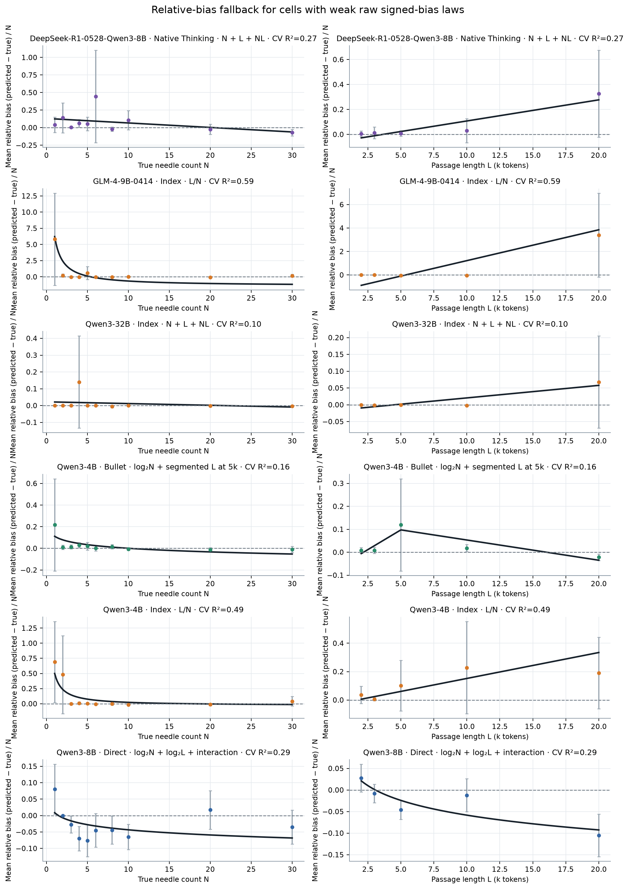
归一化最有帮助的是 GLM-4 Index：CV cell R² 从约 0.33 提升到约 0.59，说明其误差更接近“相对比例偏差”而非固定整数偏差。Qwen3-4B Index 提升到约 0.49，仍只到边界水平；其余弱单元没有因除以 N 而变成可靠 law。
4. 各模型、各 Mode 的散点与拟合曲线
Qwen3-1.7B
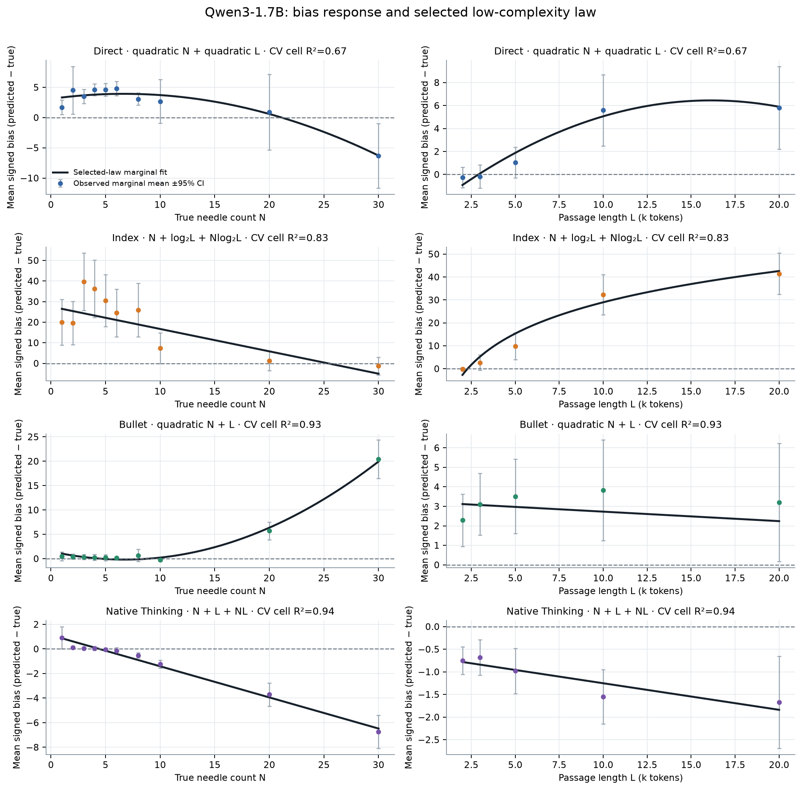
Qwen3-4B
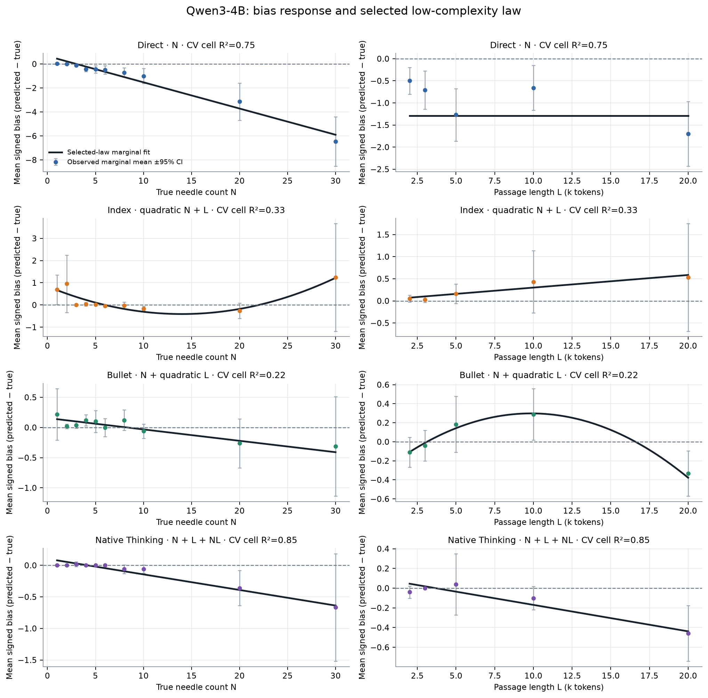
Qwen3-8B
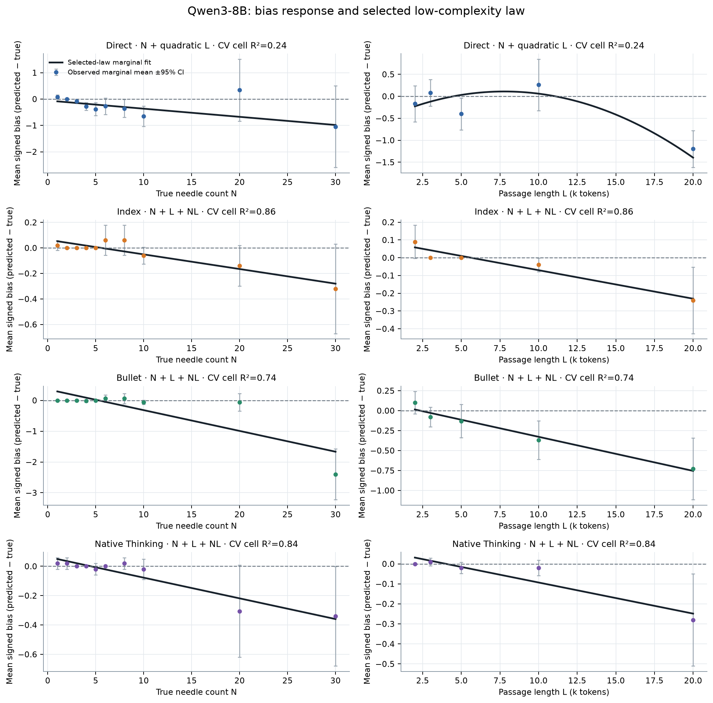
Qwen3-32B
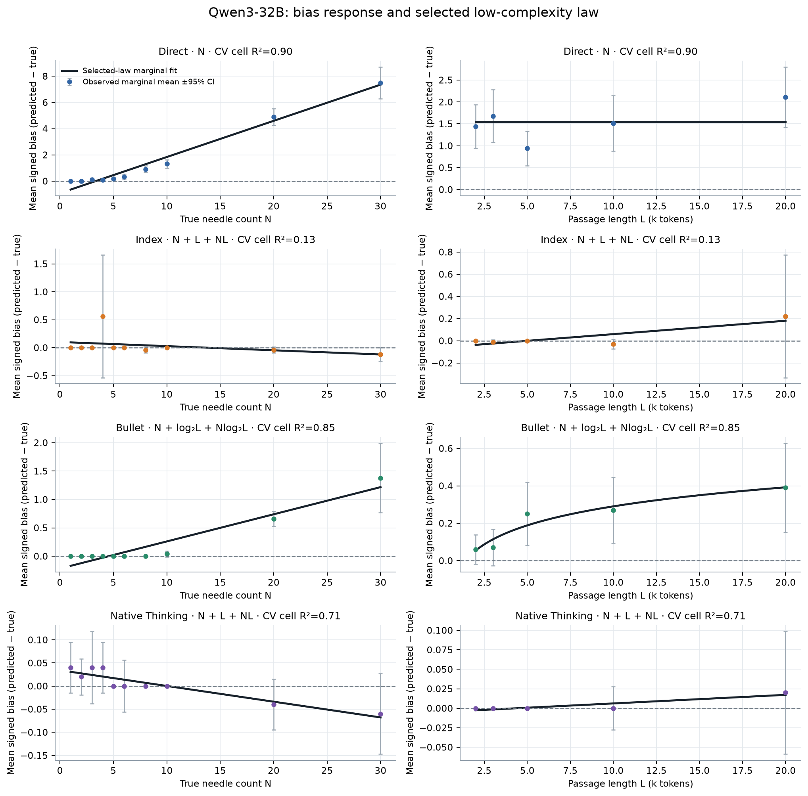
Gemma4-E4B
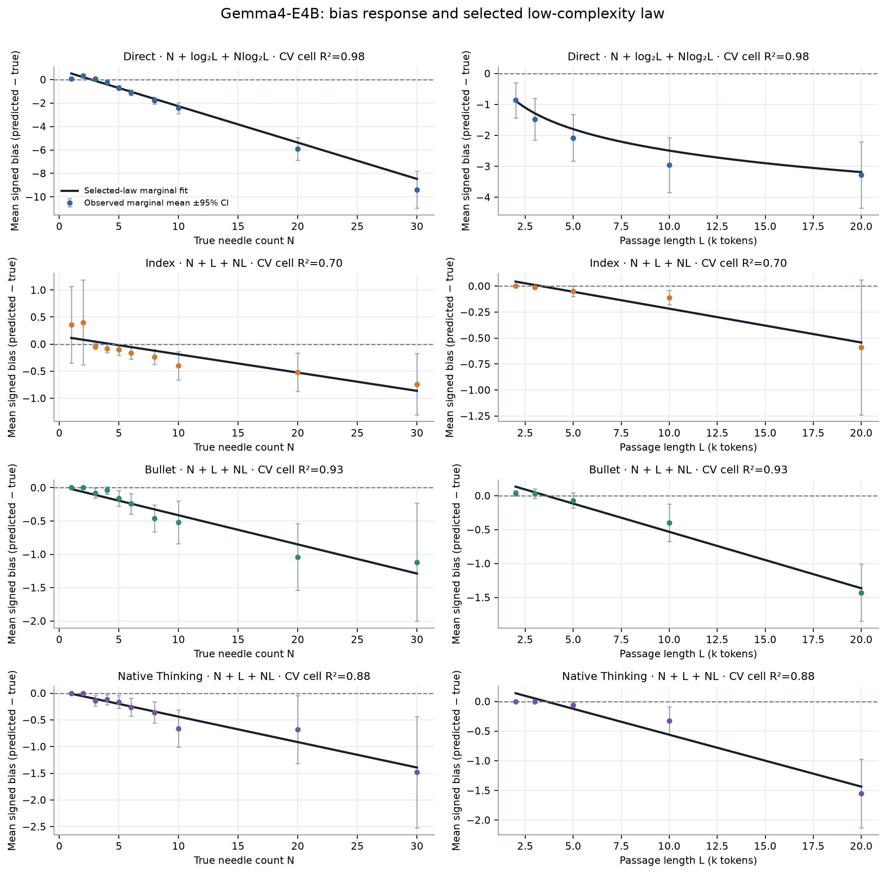
Gemma4-12B
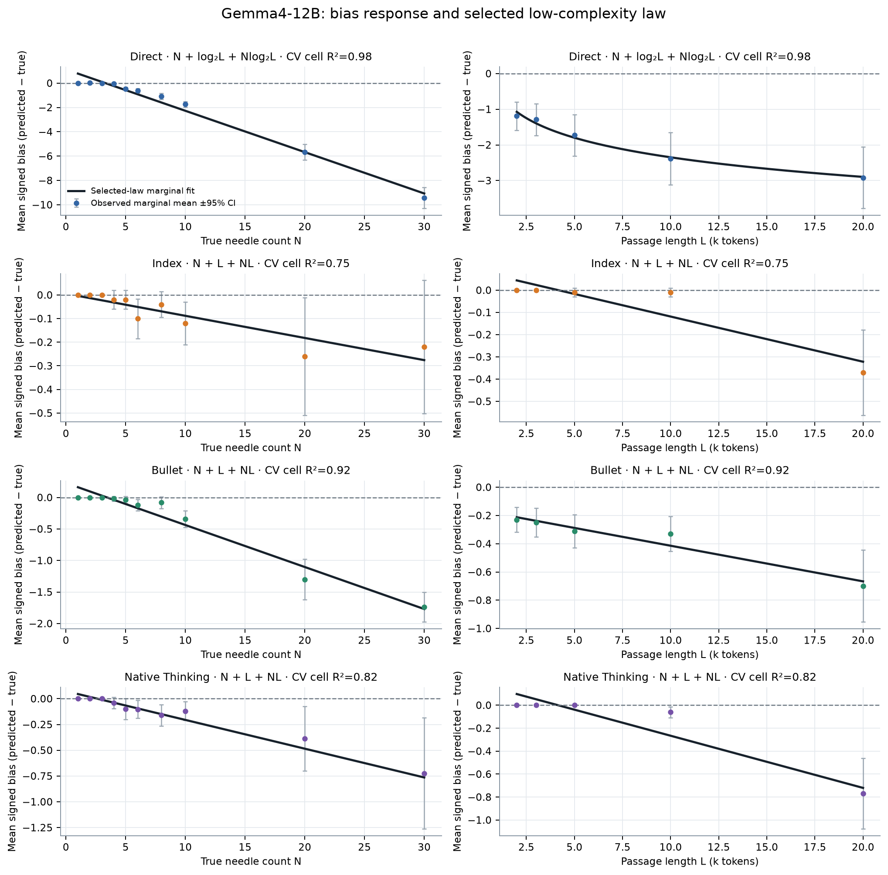
DeepSeek-R1-0528-Qwen3-8B
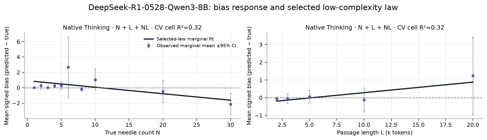
GLM-Z1-9B-0414
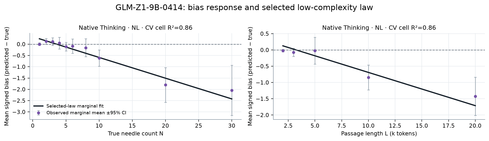
GLM-4-9B-0414
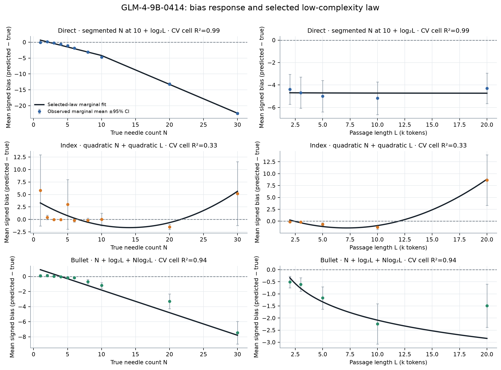
5. 是否存在普适形式？
最清晰的共同结构出现在 Native Thinking。固定同一双线性形式、只允许每个模型拥有不同参数：
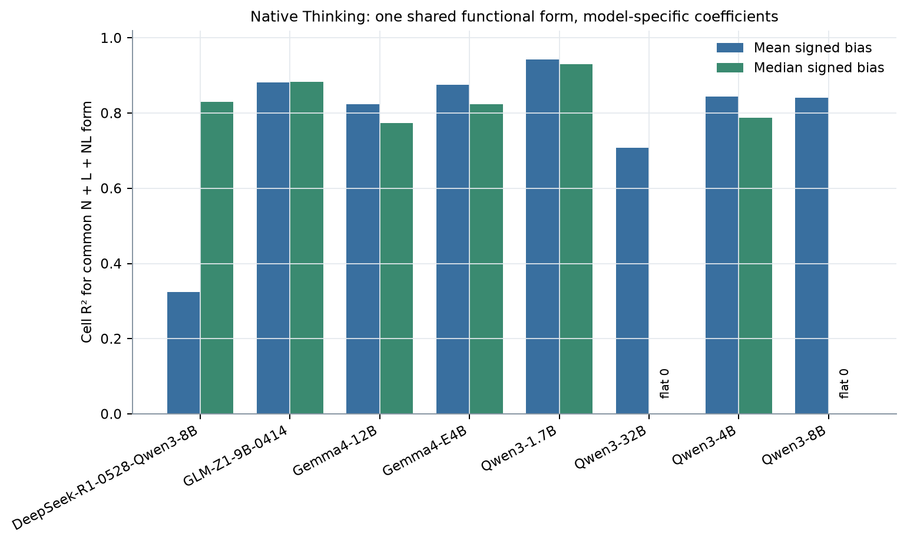
| Model | Mean-bias R² | Median-bias R² | Median flat zero | Mean bias | MAE |
|---|---|---|---|---|---|
| DeepSeek-R1-0528-Qwen3-8B | 0.324 | 0.830 | False | 0.220 | 1.174 |
| GLM-Z1-9B-0414 | 0.882 | 0.883 | False | -0.447 | 0.704 |
| Gemma4-12B | 0.824 | 0.774 | False | -0.161 | 0.161 |
| Gemma4-E4B | 0.875 | 0.824 | False | -0.387 | 0.419 |
| Qwen3-1.7B | 0.943 | 0.931 | False | -1.124 | 1.466 |
| Qwen3-32B | 0.708 | — | True | 0.004 | 0.028 |
| Qwen3-4B | 0.844 | 0.788 | False | -0.111 | 0.175 |
| Qwen3-8B | 0.841 | — | True | -0.062 | 0.082 |
四款 Qwen 的 mean-bias cell R² 分别约为 0.943、0.845、0.841、0.708；Qwen3-8B 与 32B 的 50 个条件 median bias 全部为 0。扩展到八个目标模型时，median 形式在所有非平坦模型上约为 0.774–0.931，DeepSeek 的 mean bias 是唯一明显例外，但其 median bias 仍可由同一形式解释（约 0.83）。
Direct、Index、Bullet 没有同样强的跨四款 Qwen 非平凡 law。更合理的共同描述是能力分区：1.7B 枚举出现正向爆炸偏差；4B/8B/32B 的 Index 逐渐进入近零 median-bias 区；Direct 的误差方向跨规模不稳定。
6. 适用范围与不能推出的结论
这些 law 只在 \(N=1\)–30、\(L=2\)k–20k、当前城市-分数模板和固定 decoding 下成立；leave-level-out 结果显示，某些高 cell R² law 对未见 N 或 L 水平的外推会显著变差。公式是经验响应面，不证明模型内部真的执行乘法、密度估计或任何特定算法。
此外，Gemma4-12B Direct 使用 Strict appendix，Native Thinking 的大量严格格式失败仍可解析出数字；因此 bias law 与 registered success 描述的是不同层面。若要做确认性研究，应冻结 \(N+L+NL\) Native law，在新 seeds、不同 haystack 文体和更宽 N/L 范围上复验。